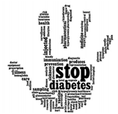

|  |
Illinois State Diabetes Commission BoardAs a member of the Illinois State Diabetes Commission Board, I understand the need to ensure that
the information that is critical in saving lives is disseminated to the people. There are many
individuals diagnosed with diabetes and are without health insurance that are in need of this
information. As a mother whose daughter was diagnosed with diabetes when she was only four years
old, I understand the importance of becoming informed about diet and exercise to help with diabetes.
As a diabetic myself, I understand the needs of those who have been diagnosed with this disease in
understanding the things that they can implement in their lives to improve their health.
|

|
Maywood Tennis Association (MTA)Knowing that exercise plays a key role in good health and safety, I sponsor MTA which provides free
tennis lessons to the urban children ages 8 to 18. As a life-long tennis player myself, I was
privilege to learn tennis almost 40 years ago. I have played on the professional circuit track,
and understand the demand and focus of excelling in this sport. It has been my life-long experiences
playing tennis that I understand the benefits that our children and youth can gain.
|
CEDAMy six year tenure as a board member for CEDA (Community and Economic Development Association of
of Cook County) has allowed me the privilege to assist in making administrative decision that effect
the lives of family and individuals to assist them in obtaining their ability to become
self-sufficient. For your convenience I have included CEDA's Scholarship and Self-Employment Training
Program links.
|